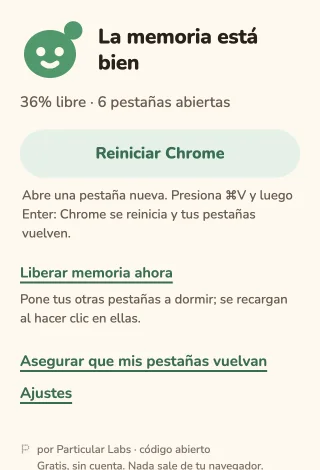
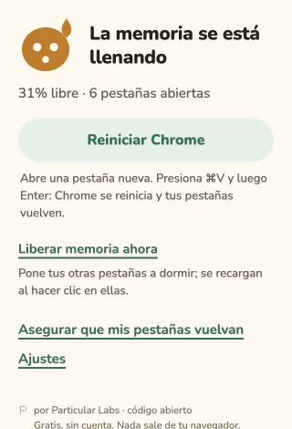
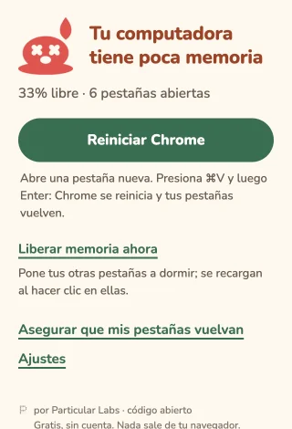

RAM Nudge
Una piedrita que vigila tu memoria libre y te avisa antes de que Chrome se vuelva lento.
Descargar el zip más recienteGratis. Sin cuenta. Instálala tú en unos pocos pasos. Así se instala
Una carita. Cinco estados.
La piedrita en tu barra cambia cuando baja la memoria libre de tu computadora. Una mirada discreta y un aviso cuando queda poca.
- Calma
- Tensión
- Sudor
- Rojo
- Derretido
Reinicia con un solo pegado
Reiniciar Chrome copia chrome://restart y abre una pestaña nueva. Presiona Cmd+V en Mac o Ctrl+V en Windows/Linux y luego Enter.
Elige Continuar donde lo dejaste en los ajustes de inicio de Chrome para recuperar tus pestañas. Si otra extensión reemplaza la pestaña nueva, presiona Cmd+L (Mac) o Ctrl+L (Windows/Linux) antes de pegar.
Liberar memoria ahora
Pon otras pestañas a dormir sin reiniciar. Las activas de cada ventana, las fijadas, las que reproducen sonido y las excluidas del Ahorro de memoria de Chrome siguen despiertas.
Las pestañas dormidas se recargan al hacer clic. Guarda tu trabajo primero: los cambios sin guardar en una página pueden perderse.



Hazle un lugar a tu piedrita.
Instálala gratis, sin cuenta. Funciona en Chrome 120 o superior (y navegadores Chromium de ese nivel).
Esta instalación es manual mientras llega la versión de Chrome Web Store.
- Descarga el zip más reciente desde GitHub Releases (el archivo que termina en
-chrome.zip). - Descomprímelo. Obtendrás una carpeta de RAM Nudge.
- Mueve la carpeta a un lugar permanente. Chrome carga la extensión desde ahí: no la borres.
- Copia
chrome://extensionsen la barra de direcciones de Chrome y presiona Enter. - Activa el Modo de desarrollador en la parte superior.
- Haz clic en Cargar descomprimida y elige la carpeta que guardaste.
Opcional: verifica la descarga
Descarga SHA256SUMS.json de la misma versión. En tu carpeta de descargas, ejecuta uno de estos comandos y compara el SHA-256 con la entrada del zip en ese archivo.
macOS
shasum -a 256 ram-nudge-*-chrome.zipLinux
sha256sum ram-nudge-*-chrome.zipWindows PowerShell
Get-FileHash .\ram-nudge-*-chrome.zip -Algorithm SHA256¿Nueva versión? La misma casita.
Descarga el nuevo zip, descomprímelo y reemplaza el contenido de tu carpeta permanente de la extensión por el nuevo contenido. En chrome://extensions, haz clic en Recargar en la tarjeta de RAM Nudge.
No hay actualizaciones automáticas hasta la versión de Chrome Web Store. Chrome puede mostrar un aviso de extensiones en modo de desarrollador al iniciar.
Tu memoria. Tu navegador.
Nada sale de tu navegador. Sin cuenta, sin rastreo, sin llamadas de red.
Cuatro permisos, en palabras sencillas
system.memory- Leer la memoria total y libre del sistema.
alarms- Comprobar la memoria cada 30 segundos.
storage- Guardar tus ajustes y el estado de los avisos en tu navegador.
notifications- Mostrar un aviso de poca memoria.
Sin permisos de acceso a pestañas o sitios web. RAM Nudge puede contar y dormir pestañas, pero no leer sus títulos, direcciones ni contenido.
Código abierto con licencia MIT. Ver el código en GitHub.